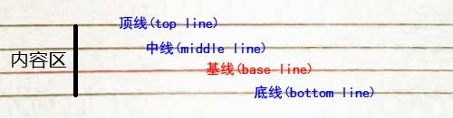
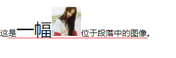
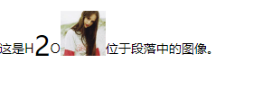
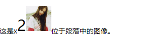
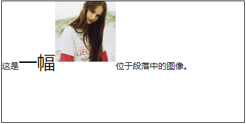
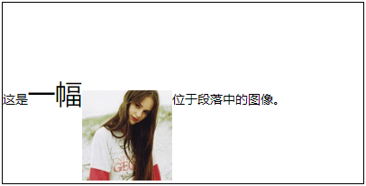
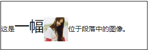
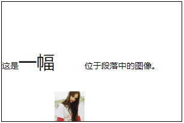
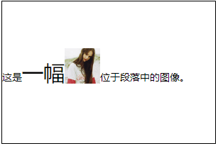

前言
在总结如何让img标签垂直居中时发现，vertical-align这个属性非常重要。之前一直用到的属性值也就middle，它真的挺管用的，但没有系统的把它的其它属性值了解清楚。所以，这篇文章打算结合图片来形象说明。
首先声明：vertical-align只对行内块元素起作用！
vertical-align的取值
在w3school，它的值有如下表格11种方式：
| 值 | 描述 |
|---|---|
| baseline | 默认。元素和父元素的基线对齐 |
| sub | 垂直对齐文本的下标。 |
| super | 垂直对齐文本的上标 |
| top | 与本行的最大行高的最顶端对齐 |
| text-top | 把元素的顶端与父元素字体的顶端对齐 |
| middle | 把元素的中部与父元素字体的中部对齐 |
| bottom | 与本行的最大行高的最低端对齐 |
| text-bottom | 把元素的顶端与父元素字体的低端对齐 |
| length | 通过距离升高（正值）或降低（负值）元素。'0cm'等同于'baseline' |
| % | 通过距离（相对于1line-height1值的百分大小）升高（正值）或降低（负值）元素。'0%'等同于'baseline' |
| inherit | 规定应该从父元素继承 vertical-align 属性的值。 |
首先，看到值的描述的时候，发现真的很难弄清楚它们之间的区别。
要具体说明这几种情况的话，还要继续理清css中字体的行高和几条线（顶线、中线、基线以及底线）；
行高：基线间的距离；
行间距：上一文本行基线和下一文本行顶线之间的距离；
内容区：底线和顶线之间的距离；
行框：一个浏览器渲染模型中的一个概念，无法显示出来，但是它又确实存在，它的高度就是行高指定
的高度；
行高 = 内容区 + 行间距。
具体如图所示：

接下来，分别对这些取值进行比较。
1.vertical-align: baseline;
vertical-align: baseline; 元素和父元素的基线对齐。
1 | <style type="text/css"> |
效果如下：

如上图所示，和文字最低端还有一部分距离。
2.vertical-align: sub;
vertical-align: sub; 垂直对齐文本的下标
1 | <style type="text/css"> |
效果如下：

注意：我已经把sub标签中的文字特意设置变大，我们可以清楚的看到图片是和sub标签内的内容2的最低端对齐的。
3.vertical-align: super;
vertical-align: super; 垂直对齐文本的上标
1 | <style type="text/css"> |
效果如下：

注意：我已经把sup标签中的文字特意设置变大，我们可以清楚的看到图片是和sup标签内的内容2的最低端对齐的。
4.vertical-align: top;
vertical-align: top; 与本行的最大行高的最顶端对齐
注意：行框高度等于本行内所有元素中行内框最大的值（以行高值最大的行内框为基准，其他行内框
采用自己的对齐方式向基准对齐，最终计算行框的高度）
1 | <style type="text/css"> |
效果如下：

注意：其实这里的图片对齐的地方就是行高的顶端，而一行中的行高是由行内元素中最大的值决定的。此时，这里最大的行高就是span标签的行高，因此这一行的行高为200px。要是不信，可以将span的行高改为300px,你会发现图片依然在最顶端显示。
5.vertical-align: text-top;
vertical-align: text-top; 把元素的顶端与父元素字体的顶端对齐
1 | <style type="text/css"> |
效果如下：

注意：这里说的父元素的字体的顶端是“这是”和“位于段落中的图像”这些文字，因此图片与它们的顶端对齐，并不与span标签内的文字对齐。
6.vertical-align: middle;
vertical-align: middle; 把元素的中部与父元素字体的中部对齐
1 | <style type="text/css"> |
效果如下：

注意：从图中可以发现图片并不处于p标签的中部。要让图片垂直居中，需要在父元素设置font-size: 0; 。
其实，middle是向谁看齐，现在还不是很清楚。有人说是中线，但也有人说对齐到中线而是对齐到基线以上1/2x的位置。这里先放着，下次再查查资料，因此，这里只说中部对齐。
7.vertical-align: bottom;
vertical-align: bottom; 与本行的最大行高的最低端对齐
1 | <style type="text/css"> |
效果如下：

注意：为了有直观的效果，把span的行高改为了200px。
8.vertical-align: text-bottom;
vertical-align: text-bottom; 把元素的顶端与父元素字体的低端对齐
1 | <style type="text/css"> |
效果如下：

注意：这里的span的行高也是200px。